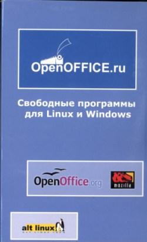
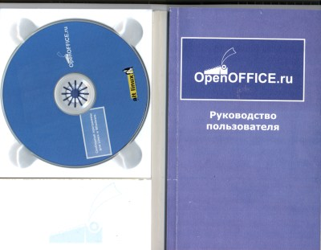
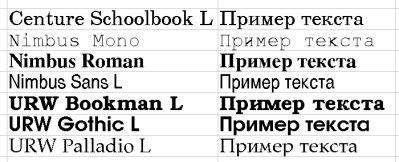

Веха в истории, или офисные перспективы открытого софта
Автор: Алексей Федорчук, [email protected]
Опубликовано: 30.8.2002
© 2002, Издательский дом «КОМПЬЮТЕРРА» | http://www.computerra.ru/
Журнал
«СОФТЕРРА» | http://www.softerra.ru/
Этот материал Вы
всегда сможете найти по его постоянному адресу: http://www.softerra.ru/freeos/19883/
Не исключаю возможности того, что событие,
свершившееся 13 июня 2002 г., окажется эпохальным — впервые открытые и свободные
программы получили шанс занять на пользовательских десктопах место, сопоставимое
с их коммерческими аналогами.
Что же случилось в жаркий послеполуденный час
указанной даты? А случилось внешне скромное и заурядное явление — представление
широким кругам избранной общественности результатов работы проекта OpenOffice.ru, имевшее
девизом — «Свободные программы для Linux и Windows». Имевшее место быть в офисе
фирмы Altlinux —
организатора, вдохновителя и исполнителя этого проекта.
О самой по себе Altlinux распространяться не
буду — все интересующиеся вопросом знают ее еще с тех пор, когда она именовалась
IPLabs Linux Team. А вот о проекте пару слов сказать стоит.
Многим из нас памятен интегрированный офисный
пакет StarOffice фирмы Sun — о несравненных достоинствах которого так много
говорили большевики еще в те времена, когда разрабатывался он фирмой
StarDivision. Правда, разговоры эти очень напоминали мне один эпизод из романа
«Айвенго». Помните, как притомившись от обильных возлияний, Ричард Львиное
Сердце (выступавший тогда под ником «Черный Рыцарь»), наполнил свой кубок водой
из купели Святого Дунстана, за что был немедленно укоряем братом Туком,
молвившим: «Это верно, что в ней он крестил язычников целыми толпами, да только
ни в каком предании не сообщается, что сам он эту воду пил» [1].
Так вот, у меня всегда было впечатление, что
ревнители StarOffice сами его в реальной практической работе не использовали.
Ибо первая же попытка к тому (а я честно пытался его использовать именно для
реальных задач и во всех проявлениях — от текстового редактора до рисовального
модуля) до недавнего времени показывала полную его к тому непригодность.
При этом я отнюдь не хочу сказать, что само по
себе программа была плоха. Отнюдь — именно она воплощала в себе идею
интегрированного пакета par exellence. Да и реализация идеи в целом была на
высоте. Если бы не пара досадных шероховатостей в работе с кириллицей, да не
пара ошибок в электронной таблице, да не столь бы странный подход к кодировкам.
Каждая из этих «фич» по отдельности — была мелочью (кроме, пожалуй,
невозможности подчас записать измененный файл — я с этим регулярно сталкивался,
и не где-нибудь, а в электронной таблице, да еще после ввода чертовой прорвы
формул для геохимических пересчетов). Но все вместе — они напрочь разрушали
ощущение комфорта от работы в по настоящему интегрированной среде.
И потому все мы с надеждой и верой в светлое
будущее восприняли весть об открытии кодов StarOffice, вокруг коих и образовался
международный проект OpenOffice.org [2] (как в свое
время проект Mozilla — вокруг кодов Netscape). А то, что к этому проекту
присоединилась команда разработчиков Altlinux (в рамках, так сказать, субпроекта
OpenOffice.ru) — делало веру эту более чем обоснованной — «Таль сказал, такой не
подведет». И мы наконец получим а) полноценный офисный пакет под Linux, б)
полноценный офисный пакет под Linux, работающий также и под Windows, и в)
полноценный офисный пакет под Linux, работающий также и под Windows, и притом с
полноценной же поддержкой кириллицы.
И вот — приглашение на представление первого
релиза проекта OpenOffice.ru. Каковое (приглашение) начинается с раздачи слонов
— то есть предмета разговора. Являющего собой голубоватую книжку-раскладку (рис.
1), внутри которой — руководство пользователя более чем на сотню страниц (как
это принято у Altlinux'а, прекрасно написанное), «встроенный» блокнотик для
заметок [3], ну и конечно
диск с представляемым софтом (рис. 2).

Рис. 1. OpenOffice.ru — внешний вид…

Рис. 2. … и внутреннее содержание
А на диске обнаруживаются, для начала, три
каталога: Linux, Win32 и sources. В каждом из которых — не только OpenOffice,
вынесенный в заглавие, но и Mozilla первого релиза, и притом — в собственной
сборке, то есть адаптированная для Руси (как Залесской, сиречь России, так и
исконной, именуемой ныне Украиной). Украинской версии OpenOffice, правда,
обнаружить не удается (что компенсируется наличием версии английской), но сама
по себе рiдна мова в русской версии поддерживается.
Обе программы в Linux-версиях — не зависимы от
дистрибутива, Mozilla — в виде простого компрессированного tar-архива,
OpenOffice — в виде кучи файлов собственного, идущего от StarOffice, формата.
Единственное системное требование — наличие библиотеки glibs версии не ниже
2.2.0 lдля OpenOffice и 2.2.2. — для Mozilla. Так что проблем при установке в
любой более-менее современный дистрибутив не предвидится. Ну а уж с недавно
вышедшим Altlinux Master 2.0 их нет по определению — именно на нем сборка
OpenOffice.ru и тестировалась.
Собственно, единственная шероховатость
Linux-инсталлятора (касаемая только OpenOffice) — требование заблаговременной
установки в системе X Window шрифта семейства Helvetica (с легкой руки Microsoft
— Arial) в кодировке cp1251 — иначе все сообщения будут передаваться
вопросительными знаками. Само по себе это не проблема — можно установить
стандартные юникодовские ttf-шрифты из малого джентльменского набора Windows и в
файле /usr/X11R6/lib/X11/fonts/dir_name/fonts.dir обозвать их cp1251. Да и
локаль при этом не обязана быть Windows'овой, сойдет и KOI8-R. Однако
идеологически мне это видится неправильным — тем более, что в комплект
OpenOffice входят прекрасные кириллические шрифты работы Валентина
Филлипова.
К сожалению, OpenOffice не удается установить «в
лоб» во FreeBSD для работы в режиме Linux-совместимости: обеспечивающий ее пакет
linux-base в текущих версиях (по 4.5 включительно, да и в пре-релизе 5-й ветки —
тоже) поддерживает только glibc 2.1. Возможно, в только что появившейся версии
4.6 (которая, надеюсь, докачивается у меня на службе в момент, когда пишутся эти
строки) это осуществится.
Но зато уж шрифтами попользоваться мне удалось и
во FreeBSD. Для этого нет необходимости ставить сам Office — достаточно на диске
в каталоге с исходниками (том его подкаталоге, где лежат патчи от Altlinux)
отыскать файл valek_fonts.tar.bz2, распаковать его в /usr/X11R6/lib/X11/fonts,
посредством
$ ttmkfdir > fonts.dir
создать файл каталога, заменить в нем невнятные
кодировки (а ttmkfdir'ом они автоматически будут определены как угодно) на
требуемые системной локалью (например, на koi8-ru) и удалить лишние строки. Ну и
конечно не забыть прописать путь к вновь образованному каталогу в файле
/etc/X11/XF86Config.
Должен сказать, что я очень чувствителен к
качеству шрифтов — и с эстетических позиций, и по медицинским показаниям. Так
вот, шрифты Валентина — это практически первые шрифты для системы X Window,
которые не вызвали у меня активной неприязни. И, более того, очень даже
понравились.
В комплекте — ttf-шрифты в виде четырех гарнитур
с засечками, пары беззасечечных и одна моноширинная (рис. 3). Несколько
подкачала только последняя — вследствие излишней грацильности Nimbus Mono не
очень пригоден для использования по прямому назначению (в текстовых редакторах и
терминальных окнах). Тем не менее можно констатировать, что наконец-то появилась
нормальная кириллическая альтернатива стандартному набору производства Cronix'а,
который вследствие своей растровости смотрится в век антиалиасинга очень
архаично.

Рис. 3. Шрифты ttf из коллекции OpenOffice.ru
Кроме ttf-шрифтов, имеются и шрифты Type 1,
однако до них руки у меня не дошло — по смешной, должен признаться, причине:
порта утилиты type1inst под рукой не оказалось, а создавать файл fonts.dir
вручную показалось ленивым. Могу заметить только, что их — еще больше, чем
ttf-шрифтов, около дюжины гарнитур.
Все сказанное вращалось вокруг собственно
OpenOffice. Однако пора вспомнить и о втором компоненте проекта — Mozilla. Тут
ситуация ясна: если для адекватной оценки офисного комплекта потребуется
изрядное время эксплуатации в условиях, приближенных к боевым, то мнение о
браузере однозначно определяется после его установки (без разницы — под Linux
ли, или под Windows): на сегодняшний день и для наших условий это одни из лучших
продуктов этого класса [4]. Главная его
особенность — следование спецификациям W3C, яко воинскому уставу, без попыток
подменить букву их — якобы духом (чему в истории мы тьму примеров сыщем). И при
этом — поддержка всех их (относительных) новшеств — и стилевых таблиц (CSS1,
насколько я успел заметить — полностью, CSS2 — в практически значимой ныне
части) и плавающих фреймов (моя слабость), и слоев, и протчая, и протчая, и
протчая.
Показательна безболезненность установки Mozilla
под Windows, поверх ли Netscape, или IE. В первом случае он автоматически
наследует все установки — и почтового клиента, и proxy-сервера, и
языково-зависимых настроек. Из IE он способен импортировать закладки и адресную
книгу.
Правда, вопреки ожиданиям, быстродействие
Mozilla меня не восхитило — возможно, за последнее время я слишком привык к
стремительности консольных браузеров. Однако и ощущения раздражающей
медлительности (как при общении с Netscape 6 или последними версиями IE) — также
не было. И к тому же скорость работы браузера может быть повышена
соответствующими настройками — благо, в комплекте имеется прекрасная
русскоязычная документация.
В Linux-версии Mozilla больше всего привлекает
полный набор plug-ins, ранее имевших место быть только в Windows-версии
Netscape. Здесь и Acrobat Reader, и RealPlayer, и проигрыватель флэшек.
Особенность пока уникальная, позволяющая линуксоидам не чувствовать себя сирыми.
Конечно, все это и раньше можно было скачать и установить самостоятельно — но
получение, скажем, RealPlayer'а с фирменного сайта всегда было занятием,
требующим терпения недюжинного…
Как и сам OpenOffice, установить Mozilla под
FreeBSD в первозданном виде не удается — и по той же причине несовпадения
библиотеки glibs. Однако с RealPlayer'овым plug-in'ом, как ни странно, никаких
проблем не возникает — копируется на диск, изменяются атрибуты доступы (а именно
—
$ chmod a+x rp8_linux20_libc6_i386_cs2.bin
запускается от лица супер'а — и все, без
малейшей Mozilla можно под FreeBSD слушать Real'овские подборки, например, с http://www.bards.ru/.
Доброго слова заслуживает такой компонент
Mozilla, как компоновщик web-страниц, наследник Composer'а из Netscape.
Последний на протяжении всего времени своего существования являлся не более чем
web-редактором для бедных, предназначенным для того, чтобы слепить страничку в
Интернете на скорую руку. А вернее, не столько слепить, сколько — подправить.
Чему, однако, препятствовало упорное желание переиначить html-код по своему
усмотрению.
Нельзя сказать, что от такой склонности
компоновщик Mozilla излечился полностью. Но ныне, по крайней мере, его
вмешательство в код минимально и более-менее оправданно. Выражаясь главным
образом в непременном закрытии тэгов (в том числе и тех, для которых сие не
считается обязательным — но желательным-то оно является всегда) и дописывании
тэгов, абсолютно необходимых (укзания на DOCTYPE, например).
Пора, однако, подвести предварительные итоги.
Конечно, и к OpenOffice, и к Mozilla не раз еще придется обращаться и на диске,
и на бумаге. Однако главное ясно: открытые кросс-платформенные приложения (если
под крестовинами понимать Windows и Linux), идентичные по интерфейсу и нормально
работающие в русскоязычном окружении, состоялись. Относительно OpenOffice
говорить еще рано, но Mozilla — прямой кандидат в корпоративные стандарты на
замену устаревшему Netscape 4.x и несостоявшемуся Netscape 6.x. И, конечно, это
прекрасный выбор для тех, кто без симпатии относится к IE, но вынужден им
пользоваться — не из-за его достоинств, а вследствие недостатков ранее бывших
альтернатив.
Телефон редакции: (095) 232-2261
E-mail редакции: [email protected]
По вопросам
размещения рекламы обращаться к Алене Шагиной по телефону +7 (095) 232-2263 или
электронной почте mailto:[email protected]